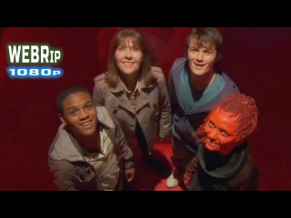
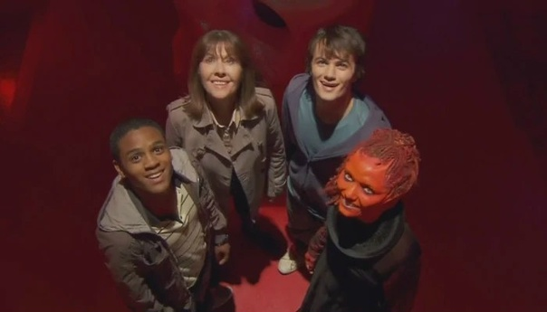

The Mad Woman in the Attic
Дата выхода: 22-23 октября 2009
Формат: 2 эпизода по 30 мин.
| Варианты озвучек: | * Разные: смотрите по инструкции |
|---|---|
| Скачивание и просмотр: |
2059 год. На заброшенном чердаке на Баннерман-роад престарелая Рани Чандра рассказывает о том где, когда она встретила пришельца по имени Ева, после чего её жизнь пошла наперекосяк.
